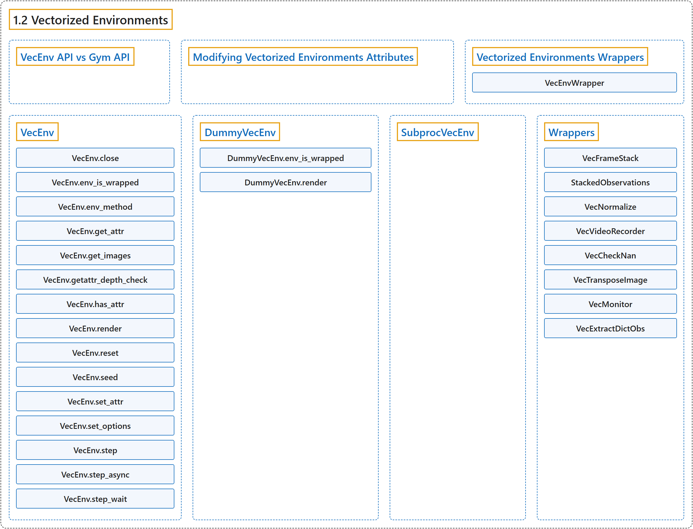

1.2 Vectorized Environments
Classification

Glossary
| Term | Definition | 中文翻译 | Source |
|---|---|---|---|
| 1.2 Vectorized Environments 向量化环境 |
"Vectorized Environments are a method for stacking multiple independent environments into a single environment." | 向量化环境是一种把多个独立环境堆叠成单个环境的方法。 | Raffin et al., n.d., "Vectorized Environments", para. 1 |
| VecEnv API vs Gym API VecEnv API 与 Gym API |
(context) "For consistency across Stable-Baselines3 (SB3) versions and because of its special requirements and features, SB3 VecEnv API is not the same as Gym API." | （语境）为了在 Stable-Baselines3（SB3）各版本之间保持一致，也因为它的特殊需求和功能，SB3 的 VecEnv API 与 Gym API 并不相同。 | Raffin et al., n.d., "VecEnv API vs Gym API", para. 1 |
| Modifying Vectorized Environments Attributes 修改向量化环境的属性 |
(context) "If you plan to modify the attributes of an environment while it is used (e.g., modifying an attribute specifying the task carried out for a portion of training when doing multi-task learning, or a parameter of the environment dynamics), you must expose a setter method." | （语境）如果你打算在环境使用期间修改它的属性（例如在多任务学习中修改一个指定某段训练所执行任务的属性，或环境动力学的某个参数），你必须暴露一个 setter 方法。 | Raffin et al., n.d., "Modifying Vectorized Environments Attributes", para. 1 |
| Vectorized Environments Wrappers 向量化环境包装器 |
(context) "If you want to alter or augment a VecEnv without redefining it completely (e.g. stack multiple frames, monitor the VecEnv, normalize the observation, …), you can use VecEnvWrapper for that." | （语境）如果你想在不完全重新定义的情况下修改或增强一个 VecEnv（例如堆叠多帧、监控 VecEnv、归一化观测……），可以使用 VecEnvWrapper。 | Raffin et al., n.d., "Vectorized Environments Wrappers", para. 1 |
| VecEnvWrapper VecEnvWrapper 向量化环境包装器 |
"They are the vectorized equivalents (i.e., they act on multiple environments at the same time) of gym.Wrapper." | 它们是 gym.Wrapper 的向量化对应物（即同时作用于多个环境）。 | Raffin et al., n.d., "Vectorized Environments Wrappers", para. 1 |
| VecEnv VecEnv 向量化环境 |
"An abstract asynchronous, vectorized environment." | 一个抽象的异步向量化环境。 | Raffin et al., n.d., "VecEnv", para. 1 |
| VecEnv.close close 方法 |
"Clean up the environment’s resources." | 清理环境的资源。 | Raffin et al., n.d., "VecEnv", para. 1 |
| VecEnv.env_is_wrapped env_is_wrapped 方法 |
"Check if environments are wrapped with a given wrapper." | 检查各环境是否被给定的包装器包装。 | Raffin et al., n.d., "VecEnv", para. 1 |
| VecEnv.env_method env_method 方法 |
"Call instance methods of vectorized environments." | 调用向量化环境的实例方法。 | Raffin et al., n.d., "VecEnv", para. 1 |
| VecEnv.get_attr get_attr 方法 |
"Return attribute from vectorized environment." | 从向量化环境返回属性。 | Raffin et al., n.d., "VecEnv", para. 1 |
| VecEnv.get_images get_images 方法 |
"Return RGB images from each environment when available" | 在可用时从每个环境返回 RGB 图像 | Raffin et al., n.d., "VecEnv", para. 1 |
| VecEnv.getattr_depth_check getattr_depth_check 方法 |
"Check if an attribute reference is being hidden in a recursive call to getattr" | 检查某个属性引用是否在对 getattr 的递归调用中被隐藏 | Raffin et al., n.d., "VecEnv", para. 1 |
| VecEnv.has_attr has_attr 方法 |
"Check if an attribute exists for a vectorized environment." | 检查向量化环境是否存在某个属性。 | Raffin et al., n.d., "VecEnv", para. 1 |
| VecEnv.render render 方法 |
"Gym environment rendering" | Gym 环境渲染 | Raffin et al., n.d., "VecEnv", para. 1 |
| VecEnv.reset reset 方法 |
"Reset all the environments and return an array of observations, or a tuple of observation arrays." | 重置所有环境并返回一个观测数组，或一个由观测数组组成的元组。 | Raffin et al., n.d., "VecEnv", para. 1 |
| VecEnv.seed seed 方法 |
"Sets the random seeds for all environments, based on a given seed." | 基于给定的种子为所有环境设置随机种子。 | Raffin et al., n.d., "VecEnv", para. 1 |
| VecEnv.set_attr set_attr 方法 |
"Set attribute inside vectorized environments." | 在向量化环境内部设置属性。 | Raffin et al., n.d., "VecEnv", para. 1 |
| VecEnv.set_options set_options 方法 |
"Set environment options for all environments." | 为所有环境设置环境选项。 | Raffin et al., n.d., "VecEnv", para. 1 |
| VecEnv.step step 方法 |
"Step the environments with the given action" | 用给定的动作让各环境前进一步 | Raffin et al., n.d., "VecEnv", para. 1 |
| VecEnv.step_async step_async 方法 |
"Tell all the environments to start taking a step with the given actions." | 通知所有环境开始用给定的动作执行一步。 | Raffin et al., n.d., "VecEnv", para. 1 |
| VecEnv.step_wait step_wait 方法 |
"Wait for the step taken with step_async()." | 等待用 step_async() 执行的那一步完成。 | Raffin et al., n.d., "VecEnv", para. 1 |
| DummyVecEnv DummyVecEnv 顺序向量化环境 |
"Creates a simple vectorized wrapper for multiple environments, calling each environment in sequence on the current Python process." | 创建一个用于多个环境的简单向量化包装器，在当前 Python 进程中依次调用每个环境。 | Raffin et al., n.d., "DummyVecEnv", para. 1 |
| DummyVecEnv.env_is_wrapped env_is_wrapped 方法 |
"Check if worker environments are wrapped with a given wrapper" | 检查各工作环境是否被给定的包装器包装 | Raffin et al., n.d., "DummyVecEnv", para. 1 |
| DummyVecEnv.render render 方法 |
"Gym environment rendering. If there are multiple environments then they are tiled together in one image via BaseVecEnv.render()." | Gym 环境渲染。如果有多个环境，它们会通过 BaseVecEnv.render() 拼接成一张图像。 | Raffin et al., n.d., "DummyVecEnv", para. 1 |
| SubprocVecEnv SubprocVecEnv 多进程向量化环境 |
"Creates a multiprocess vectorized wrapper for multiple environments, distributing each environment to its own process, allowing significant speed up when the environment is computationally complex." | 创建一个用于多个环境的多进程向量化包装器，把每个环境分配到各自的进程中，在环境计算复杂时可以显著提速。 | Raffin et al., n.d., "SubprocVecEnv", para. 1 |
| Wrappers 包装器 |
(No definition) | （无定义） | Raffin et al., n.d., "Wrappers" |
| VecFrameStack VecFrameStack 帧堆叠包装器 |
"Frame stacking wrapper for vectorized environment." | 用于向量化环境的帧堆叠包装器。 | Raffin et al., n.d., "VecFrameStack", para. 1 |
| VecFrameStack.reset reset 方法 |
"Reset all environments" | 重置所有环境 | Raffin et al., n.d., "VecFrameStack", para. 1 |
| StackedObservations StackedObservations 堆叠观测 |
"Frame stacking wrapper for data." | 用于数据的帧堆叠包装器。 | Raffin et al., n.d., "StackedObservations", para. 1 |
| StackedObservations.compute_stacking compute_stacking 方法 |
"Calculates the parameters in order to stack observations" | 计算堆叠观测所需的参数 | Raffin et al., n.d., "StackedObservations", para. 1 |
| StackedObservations.reset reset 方法 |
"Reset the stacked_obs, add the reset observation to the stack, and return the stack." | 重置 stacked_obs，把重置后的观测加入堆栈，并返回该堆栈。 | Raffin et al., n.d., "StackedObservations", para. 1 |
| StackedObservations.update update 方法 |
"Add the observations to the stack and use the dones to update the infos." | 把观测加入堆栈，并用 dones 更新 infos。 | Raffin et al., n.d., "StackedObservations", para. 1 |
| VecNormalize VecNormalize 归一化包装器 |
"A moving average, normalizing wrapper for vectorized environment." | 用于向量化环境的滑动平均归一化包装器。 | Raffin et al., n.d., "VecNormalize", para. 1 |
| VecNormalize.get_original_obs get_original_obs 方法 |
"Returns an unnormalized version of the observations from the most recent step or reset." | 返回最近一次 step 或 reset 得到的观测的未归一化版本。 | Raffin et al., n.d., "VecNormalize", para. 1 |
| VecNormalize.get_original_reward get_original_reward 方法 |
"Returns an unnormalized version of the rewards from the most recent step." | 返回最近一次 step 得到的奖励的未归一化版本。 | Raffin et al., n.d., "VecNormalize", para. 1 |
| VecNormalize.load load 方法 |
"Loads a saved VecNormalize object." | 加载一个已保存的 VecNormalize 对象。 | Raffin et al., n.d., "VecNormalize", para. 1 |
| VecNormalize.normalize_obs normalize_obs 方法 |
"Normalize observations using this VecNormalize’s observations statistics." | 用这个 VecNormalize 的观测统计量归一化观测。 | Raffin et al., n.d., "VecNormalize", para. 1 |
| VecNormalize.normalize_reward normalize_reward 方法 |
"Normalize rewards using this VecNormalize’s rewards statistics." | 用这个 VecNormalize 的奖励统计量归一化奖励。 | Raffin et al., n.d., "VecNormalize", para. 1 |
| VecNormalize.reset reset 方法 |
"Reset all environments :return: first observation of the episode" | 重置所有环境 :return: 回合的第一个观测 | Raffin et al., n.d., "VecNormalize", para. 1 |
| VecNormalize.save save 方法 |
"Save current VecNormalize object with all running statistics and settings (e.g. clip_obs)" | 保存当前的 VecNormalize 对象及其全部运行统计量和设置（例如 clip_obs） | Raffin et al., n.d., "VecNormalize", para. 1 |
| VecNormalize.set_venv set_venv 方法 |
"Sets the vector environment to wrap to venv." | 把要包装的向量环境设为 venv。 | Raffin et al., n.d., "VecNormalize", para. 1 |
| VecNormalize.step_wait step_wait 方法 |
"Apply sequence of actions to sequence of environments actions -> (observations, rewards, dones)" | 把一组动作施加到一组环境上 actions -> (observations, rewards, dones) | Raffin et al., n.d., "VecNormalize", para. 1 |
| VecVideoRecorder VecVideoRecorder 视频录制包装器 |
"Wraps a VecEnv or VecEnvWrapper object to record rendered image as mp4 video." | 包装一个 VecEnv 或 VecEnvWrapper 对象，把渲染的图像录制为 mp4 视频。 | Raffin et al., n.d., "VecVideoRecorder", para. 1 |
| VecVideoRecorder.close close 方法 |
"Closes the wrapper then the video recorder." | 先关闭包装器，再关闭视频录制器。 | Raffin et al., n.d., "VecVideoRecorder", para. 1 |
| VecCheckNan VecCheckNan NaN 检查包装器 |
"NaN and inf checking wrapper for vectorized environment, will raise a warning by default, allowing you to know from what the NaN of inf originated from." | 用于向量化环境的 NaN 与 inf 检查包装器，默认会发出警告，让你知道 NaN 或 inf 源自何处。 | Raffin et al., n.d., "VecCheckNan", para. 1 |
| VecCheckNan.check_array_value check_array_value 方法 |
"Check for inf and NaN for a single numpy array." | 检查单个 numpy 数组中的 inf 和 NaN。 | Raffin et al., n.d., "VecCheckNan", para. 1 |
| VecTransposeImage VecTransposeImage 图像转置包装器 |
"Re-order channels, from HxWxC to CxHxW." | 重新排列通道，从 HxWxC 变为 CxHxW。 | Raffin et al., n.d., "VecTransposeImage", para. 1 |
| VecTransposeImage.transpose_image transpose_image 方法 |
"Transpose an image or batch of images (re-order channels)." | 转置一张图像或一批图像（重新排列通道）。 | Raffin et al., n.d., "VecTransposeImage", para. 1 |
| VecTransposeImage.transpose_observations transpose_observations 方法 |
"Transpose (if needed) and return new observations." | （在需要时）转置并返回新的观测。 | Raffin et al., n.d., "VecTransposeImage", para. 1 |
| VecTransposeImage.transpose_space transpose_space 方法 |
"Transpose an observation space (re-order channels)." | 转置一个观测空间（重新排列通道）。 | Raffin et al., n.d., "VecTransposeImage", para. 1 |
| VecMonitor VecMonitor 向量化监控包装器 |
"A vectorized monitor wrapper for vectorized Gym environments, it is used to record the episode reward, length, time and other data." | 用于向量化 Gym 环境的向量化监控包装器，用来记录回合奖励、长度、时间和其他数据。 | Raffin et al., n.d., "VecMonitor", para. 1 |
| VecExtractDictObs VecExtractDictObs 字典观测提取包装器 |
"A vectorized wrapper for extracting dictionary observations." | 用于提取字典观测的向量化包装器。 | Raffin et al., n.d., "VecExtractDictObs", para. 1 |
References
Raffin, A., Hill, A., Gleave, A., Kanervisto, A., Ernestus, M., & Dormann, N.. (n.d.). Vectorized Environments. Stable-Baselines3 docs (Version 2.9.2a0). Retrieved October 31, 2026, from https://stable-baselines3.readthedocs.io/en/master/guide/vec_envs.html